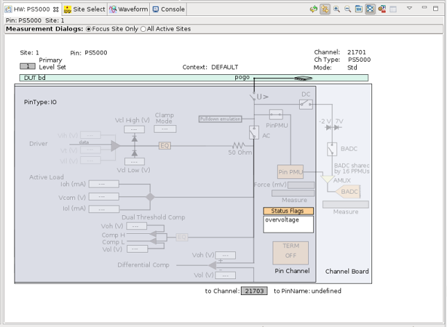
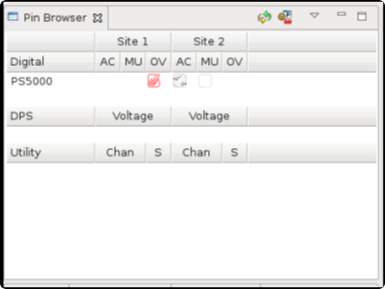

Pin Scale 5000 high voltage protection
Purpose
The Pin Scale 5000 card has got a device to protect the circuitry of the Pin Scale 5000 front-end from the exposure to high voltages and high currents. Such erroneous high voltages and high currents can be caused by a short in a DUT, or a test circuit which inadvertently connects a high voltage resource to a vulnerable digital channel.
The protection device can be used as well to protect the DUT from shorts in the test circuit.
Mechanism
Within a time frame specified in Pin Scale 5000 high voltage protection, the exposure to high voltages and high currents is detected and the subject channel gets disconnected. By means of this disconnection the high voltage may remain on the subject line external to the Pin Scale 5000 card.
In case a high voltage is detected, the hardware view shows the overvoltage status flag as displayed below. The overvoltage relay is opened and the test system circuitry is grayed out. The corresponding channel gets disconnected and the pin will be locked. The pin can be unlocked by clicking the disconnect button or during the execution of the final disconnect sequence.

The pin browser view also displays the overvoltage (OV) status of the corresponding PS5000 pins.

Functional changes
- Introduced in SmarTest 7.10.2